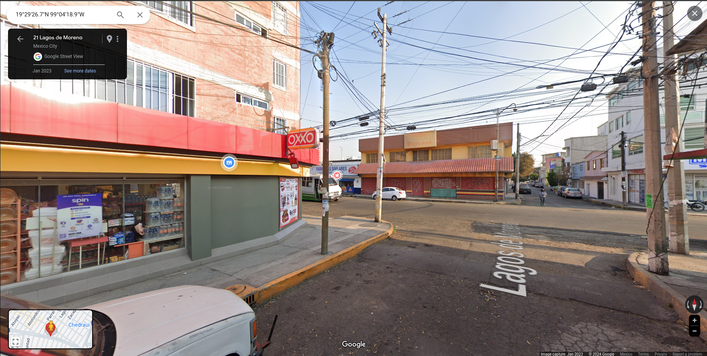

library(foreign)
library(tidyverse)
library(lubridate)
library(readr)
library(sp)
library(rgdal)
library(pracma)
library(R.utils)
library(geosphere)
library(kableExtra)
library(readr)Tarea 2
Carga de Bibliotecas
Solo puedes usar for, while:
1. Obten los centroides de todas las manzanas CDMX con el Censo 2020 del INEGI: liga; Nombre del archivo 09m.
Descarga de la base de datos
Se utilizaron las siguientes ligas:
{kind=link}
Carga de Datos
mzn_censo = readOGR("./Datos/09_ciudaddemexico/conjunto_de_datos/09m.shp")OGR data source with driver: ESRI Shapefile
Source: "/home/saraluz/Documents/2Sem/DatosEspaciales/Tareas/Datos/09_ciudaddemexico/conjunto_de_datos/09m.shp", layer: "09m"
with 66789 features
It has 8 fields- Son 66,789 manzanas
- con 8 variables
Análisis de los datos
mzn_censo@data %>% head() %>% kable() %>% kable_paper()| CVEGEO | CVE_ENT | CVE_MUN | CVE_LOC | CVE_AGEB | CVE_MZA | AMBITO | TIPOMZA | |
|---|---|---|---|---|---|---|---|---|
| 0 | 0901000010898031 | 09 | 010 | 0001 | 0898 | 031 | Urbana | Típica |
| 1 | 0901000012269024 | 09 | 010 | 0001 | 2269 | 024 | Urbana | Típica |
| 2 | 0901000011472068 | 09 | 010 | 0001 | 1472 | 068 | Urbana | Típica |
| 3 | 0901000011824024 | 09 | 010 | 0001 | 1824 | 024 | Urbana | Típica |
| 4 | 0901000012377004 | 09 | 010 | 0001 | 2377 | 004 | Urbana | Típica |
| 5 | 0901000012358031 | 09 | 010 | 0001 | 2358 | 031 | Urbana | Contenida |
mzn_censo@proj4stringCoordinate Reference System:
Deprecated Proj.4 representation:
+proj=lcc +lat_0=12 +lon_0=-102 +lat_1=17.5 +lat_2=29.5 +x_0=2500000
+y_0=0 +ellps=GRS80 +units=m +no_defs
WKT2 2019 representation:
PROJCRS["MEXICO_ITRF_2008_LCC",
BASEGEOGCRS["ITRF2008",
DATUM["International Terrestrial Reference Frame 2008",
ELLIPSOID["GRS 1980",6378137,298.257222101,
LENGTHUNIT["metre",1]],
ID["EPSG",1061]],
PRIMEM["Greenwich",0,
ANGLEUNIT["Degree",0.0174532925199433]]],
CONVERSION["unnamed",
METHOD["Lambert Conic Conformal (2SP)",
ID["EPSG",9802]],
PARAMETER["Latitude of false origin",12,
ANGLEUNIT["Degree",0.0174532925199433],
ID["EPSG",8821]],
PARAMETER["Longitude of false origin",-102,
ANGLEUNIT["Degree",0.0174532925199433],
ID["EPSG",8822]],
PARAMETER["Latitude of 1st standard parallel",17.5,
ANGLEUNIT["Degree",0.0174532925199433],
ID["EPSG",8823]],
PARAMETER["Latitude of 2nd standard parallel",29.5,
ANGLEUNIT["Degree",0.0174532925199433],
ID["EPSG",8824]],
PARAMETER["Easting at false origin",2500000,
LENGTHUNIT["metre",1],
ID["EPSG",8826]],
PARAMETER["Northing at false origin",0,
LENGTHUNIT["metre",1],
ID["EPSG",8827]]],
CS[Cartesian,2],
AXIS["(E)",east,
ORDER[1],
LENGTHUNIT["metre",1,
ID["EPSG",9001]]],
AXIS["(N)",north,
ORDER[2],
LENGTHUNIT["metre",1,
ID["EPSG",9001]]]] mzn_censo@polygons[[2]]@Polygons[[1]]@coords %>% head() [,1] [,2]
[1,] 2791388 821465.2
[2,] 2791376 821459.9
[3,] 2791365 821457.5
[4,] 2791361 821457.4
[5,] 2791360 821467.2
[6,] 2791369 821490.3Los datos se enuentran en cooordenadas un sistema de coordenadas proyectadas
plot(mzn_censo, main="Colonias CDMX")- Lo cambiamos a Latitud y Longitud
m = seq(1,length(mzn_censo))
manzanas <- tibble(mzn= numeric(),lon= numeric(),lat= numeric())
for (i in m) {
# Agrupamos las coordenadas de la i-ésima manzana a convertir en un data.frame
x<-mzn_censo@polygons[[i]]@Polygons[[1]]@coords[,1]#longitud
y<-mzn_censo@polygons[[i]]@Polygons[[1]]@coords[,2]#latitud
d <- data.frame(lon=x, lat=y)
coordinates(d) <- c("lon", "lat")
#Escribimos la proyeccion actual de nuestro sistema de coordenadas geográficas
proj4string(d) <- CRS("+proj=lcc +lat_1=17.5 +lat_2=29.5 +lat_0=12 +lon_0=-102 +x_0=2500000 +y_0=0 +ellps=GRS80 +units=m +no_defs")
#En CRS.new escribimos la proyección a la que queremos convertir nuestros datos
CRS.new <- CRS("+proj=longlat +datum=WGS84 +no_defs")
#Transformamos el sistema
d_proyectado <- spTransform(d, CRS.new)
#Convertirmos los resultados es un nuevo data.frame
D<-data.frame(mzn=i, d_proyectado)#conviértelo a data frame para que los veas como tabla normal
manzanas <- manzanas %>% add_row(D)
}
#head(D) %>% kable() %>% kable_paper()Cálculo del centroide
centroide <- manzanas %>%
group_by(mzn) %>%
summarise(c_lon=mean(lon), c_lat=mean(lat))2. Encuentra la ubicación de todos los OXXO de la CDMX, asegúrate de filtrar correctamente los datos para evitar falsos positivos.
Carga de Datos
datos_denue <- read.csv('./Datos/denue_09_1120_csv/denue_09_csv/conjunto_de_datos/denue_inegi_09_.csv')Limpieza de datos
- Primero filtramos todos aquellos que puedan ser un OXXO pero tengan otra razón social
datos_denue %>% select(nom_estab, raz_social, latitud, longitud) %>%
filter(str_detect(nom_estab, regex("oxxo", ignore_case = TRUE)) |
str_detect(nom_estab, regex("oxo", ignore_case = TRUE)) ) %>%
filter(raz_social!="CADENA COMERCIAL OXXO SA DE CV") %>% head() %>% kable() %>% kable_paper()| nom_estab | raz_social | latitud | longitud |
|---|---|---|---|
| ABARROTES LOXO | 19.30498 | -99.03738 | |
| ABARROTES LOXXO | 19.37335 | -99.01004 | |
| ABARROTES OCOMOXOTLA | 19.21709 | -99.21397 | |
| CADENA COMERCIAL OXXO | 19.49076 | -99.07192 | |
| MINISUPER XOXO | 19.27646 | -99.00568 | |
| MISCELANEA OXXO | 19.38145 | -99.20446 |
- Usamos Google Maps para revisar las más probables de ser un OXXO, y únicamente una resultó serlo:

- Con lo cual los datos quedarían como:
datos_denue <- datos_denue %>% select(nom_estab, raz_social, latitud, longitud) %>%
filter(nom_estab == "CADENA COMERCIAL OXXO" | raz_social=="CADENA COMERCIAL OXXO SA DE CV")
datos_denue %>%
head() %>% kable() %>% kable_paper()| nom_estab | raz_social | latitud | longitud |
|---|---|---|---|
| 50CSI RELACIONES EXTERIORES MEX | CADENA COMERCIAL OXXO SA DE CV | 19.44847 | -99.13852 |
| 50EBG OBREGON INSURGENTES MEX | CADENA COMERCIAL OXXO SA DE CV | 19.41737 | -99.16489 |
| 50IDX METRO INDIOS VERDES MEX | CADENA COMERCIAL OXXO SA DE CV | 19.49862 | -99.11795 |
| 50KKP SATURNO ZCL | CADENA COMERCIAL OXXO SA DE CV | 19.38593 | -99.11723 |
| 50OEJ OTHON DE MENDIZABAL MEX | CADENA COMERCIAL OXXO SA DE CV | 19.50325 | -99.15666 |
| 50TGM-LAGUNA DE TERMINOS MEX | CADENA COMERCIAL OXXO SA DE CV | 19.44240 | -99.17432 |
3. Determina cuál es OXXO más cercano al Centroide de cada manzana de la CDMX.
for (x in 1:10) {
print(x)
}[1] 1
[1] 2
[1] 3
[1] 4
[1] 5
[1] 6
[1] 7
[1] 8
[1] 9
[1] 10D[1,1][1] 66789D[1,2][1] -99.107894. Determina cuál es el OXXO que es más cercano a más manzanas de la CDMX.
5. ¿Cuál es la distancia euclidiana entre el OXXO del punto 4 y este en la Paz?
6. ¿Cuál es la distancia de Haversine entre el OXXO del punto 4 y este en la Paz?
Escribe una rutina de R para cada pregunta. Mantén el orden en tu código y comenta todo.
Colócalo en el Folder de equipo a más tardar, miércoles 31 de febrero 11 am.
Puntuación Extra:
Si tuvieras las coordenadas de los centroides de las manzanas y las de los OXXO en UTM Mercator, ¿Cómo podrías ahorrar operaciones para responder las preguntas anteriores? Diseña un planteamiento teórico - geométrico para la pregunta anterior, considera el espacio geométrico en el que están los puntos en UTM y sus propiedades.